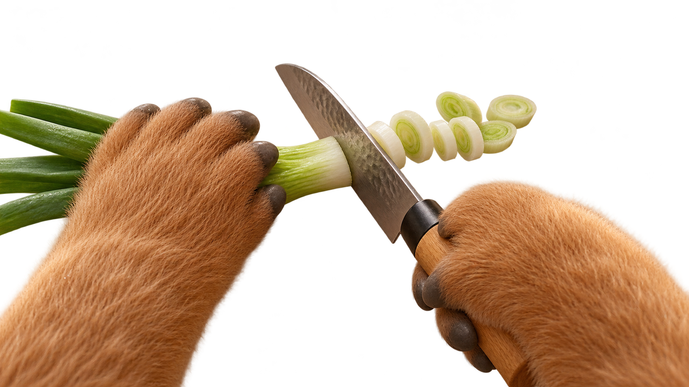
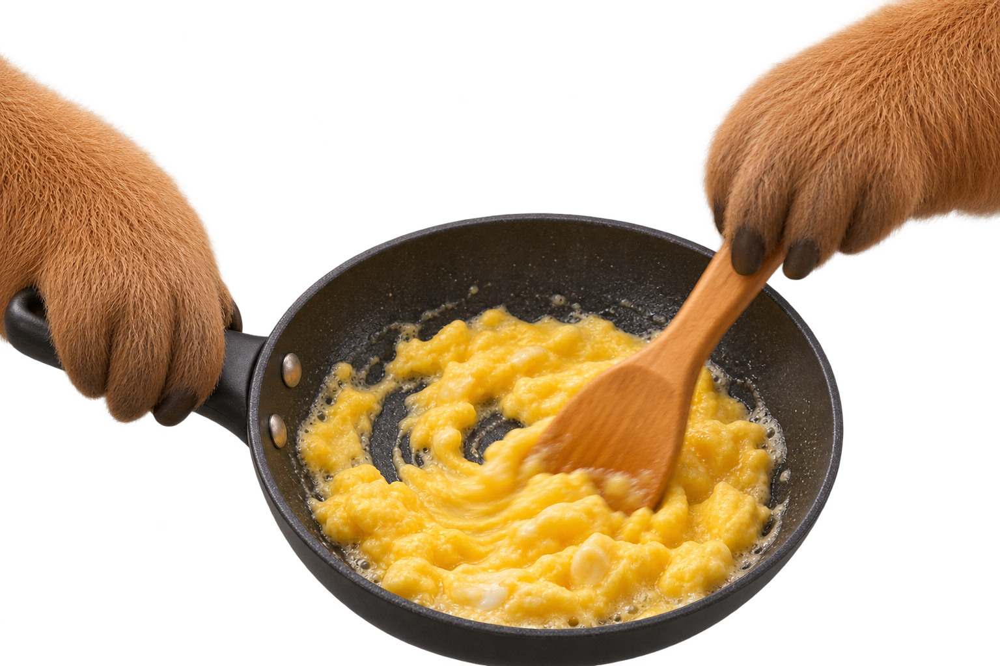
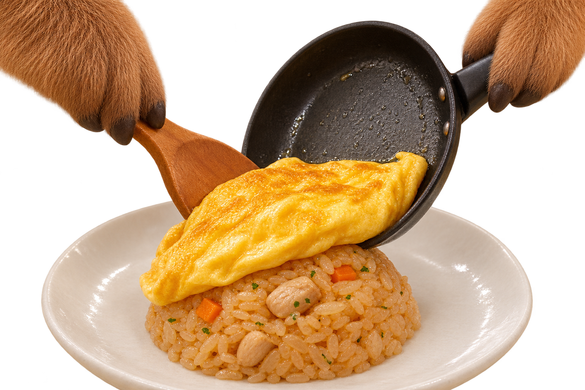
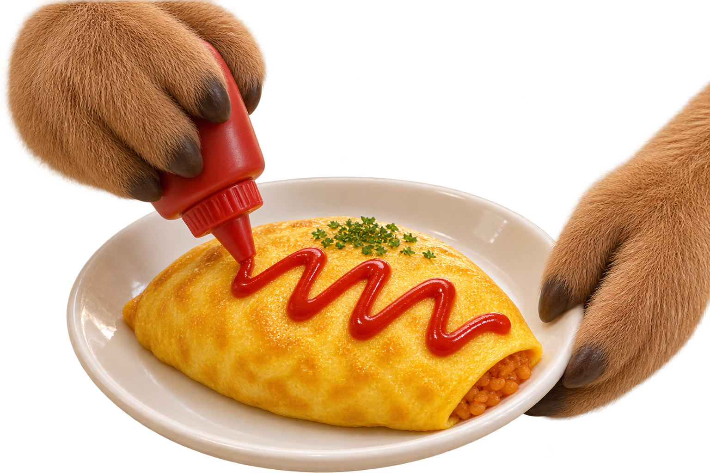

1Prep everything
Steady, lift, and slice in a continuous chopping rhythm.
A clean, single-scene test for all five cooking steps. The old Miso GIF layer is not used here, so there is no doubled kitchen, food, pan, or paw.

Steady, lift, and slice in a continuous chopping rhythm.

Small circular stir motion while the egg gently sets.
Lift, fold, and settle the soft egg.

Guide the omelette from pan to rice.

Final garnish / sauce movement.